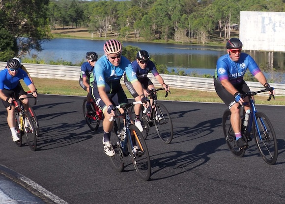
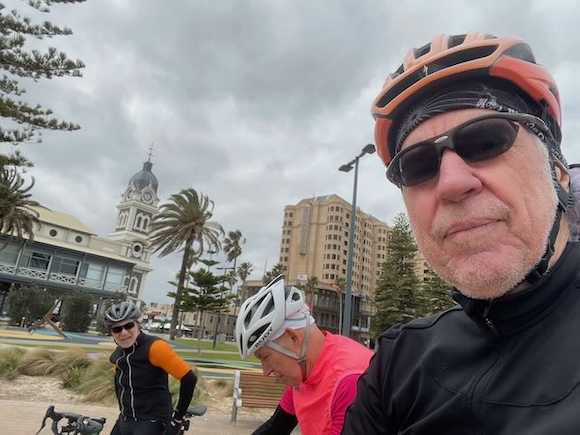

The Fargo Chronicle
Twenty-fourth Edition
December 2023
Free
Ella

While still working regularly (part time) for the Australian Girls Choir, Ella now has a full time job with QMS, a media company that specialises in digital out of home.
She and Ruby live in nearby Red Hill, and both have very busy lives. Ella is now regularly leading classes at the gym, and has completed a Certificate 3 in Fitness. This qualifies her to teach a greater variety of class types.
Ruby is a swimming instructor at the gym and teaches multiple classes, works in the creche and helps on reception and administration. Ruby also tutors students learning to play guitar.
Julie

After recovering from a New Year's Day bout of Covid, Julie and a few friends travelled to Tasmania to support a school friend, Jacqui, who had been diagnosed with cancer and was receiving treatment.

In June, Tilly, the younger daughter of her friend Robyn was married in Townsville. Julie helped Robyn and other friends assisting in decorating the reception.
Julie retires

Also in June, Julie and friend Sasha completed a challenging 50 kilometre bike ride raising well needed funds for MS research.
That kicked off a season of fundraising activities with Julie and siter-in-law Gillian helping another SIL, Cathy with an initiative to raise money for social housing by hosting a 'Christmas in July' fun night of trivia, under the banner of 'Locals Acting Up'.
This was the year that the milestone of retirement was acheived. Rest didn't last long as Julie is now a supply teacher registered with the Hospital School based at the Queensland Children's Hospital in South Brisbane. She has been getting offers of two or three days work each week. This will start back up in the New Year.
Ski holiday


Thanks to the generosity of Paul's cousin Helen Duncan and partner Philip, we enjoyed a week staying at their house in Crackenback in the NSW ski fields. We drove down and were joined in this adventure by Kate, Ben and Luna who stayed with us, and by Paul's brother Tony, Gillian and their son Elliot and his partner Judi who were nearby within the resort. The others skied every day however after just three tentative lessons Julie fell and injured her knee, requiring assistance to walk, crutches and a brace.
On our drive home from skiing we stopped in Canberra to catch up with Paul's youngest brother Peter and his family.

We caught up with Peter and daughter Gina for a meal followed by a gentle stroll and a gelato.
The following day Julie, Kate and Luna visited the festival of Floriade.
In October we drove up to Gympie with Michael and Cathy for the Gympie International Short Film Festival where we enjoyed a number of outstanding films from Australia and around the world.
Paul is intolerant
In February, Paul was diagnosed with gluten intolerance which has meant quite an adjustment to his diet. There are many gluten free options but alas now many foods that are just not suitable. Beer, for instance, is off the menu. It's just as well tha Paul enjoys wine and many cocktails. Travelling overseas may be quite the challenge, though there are schools of thought that due differences in processing, European breads and pasta might be safe for consumption. We'll see.
Paul joined his friend Michael Neal on a road trip to Sydney in February. first stop was Woolgoolga to surf and ride bikes and then on to Newcastle to catch up with Christopher Larcos. In Newcastle the trio joined Christopher's regular bunch for a couple of bike rides. Then on to Maroubra in Sydney for more surf. Paul then flew home.
The South Brisbane Men's Shed consumes a fair chunk of time. Paul joined the Shed to play music and the Shed's performance group plays regular gigs supporting community groups. Paul took over the reigns of Secretary early in the year which can be onerous at times. Key aspects of the role have been somewhat stremlined and having been reelected for the year ahead, 2024 promises to be more rewarding.
Paul has also made a start in learning to speak Italian, attending lessons with the Dante Alighieri Society.
The band played a show in April at the Triffid in Brisbane helping with fundraising for Variety, the Children's Charity.
Adelaide cycle tour
Adelaide was the chosen destination for a cycle tour this year with Paul's regular accomplices Michael and Christopher. Adelaide offers many great routes and is very popular among cyclists. We enjoyed a week of adventure including to the Adelaide beaches, to Mclaren Vale and Belair.
To keep in shape for these rides Paul tries to ride socially many mornings a week and still races with his local cycling club.
Kate

Kate, Ben and Luna started the year in Japan. Their plans to spend an extended period there took a hit with the outbreak of Covid, but managed about 10 weeks dividing the time visiting major cities and skiing.
The big news is that Kate and Ben have purchased the unit below ours in Toowong and relocated in early December.
Kate will continue teaching Japanese language at West End State School two days per week and has added another three days at the Brisbane School of Distance Education, also teaching Japanese.
Princess Luna

Luna starts preschool in 2024 at Toowong State School which is a short walk (or ride) from home. She has been accepted into the school's bilingual and bicultural program where lessons are presented in English and Auslan (Australian Sign Language).

Maxwell

Two songs have already been released from the 2024 album from Maxwell Farrington and Le SuperHomard. The backing orchestra was recorded in the Apple Studios in Abbey Road. The full album will released in February.
In live shows, Maxwell and LeSuperHomard supported Paul Weller (The Jam, The Style Council) on his European tour with many sell-out shows in some beautiful, historic venues.
A new album is also anticipated for the band Dewaere whoo have been performing a number of concerts within France.
Meanwhile in France


Béa started a new job located in Nantes, which is about 3 hours by train from their home in Saint-Brieuc.
Ida attends school a short walk nearby and turned five in December.
Tabitha

Tabitha and Julie undertook some art classes together, learning fundamentals and techniques.
Tabitha has been staying with us intermittently as she prepares to move to Europe next year for adventure and romance.
Mother's Day

Mun continues to live independently in Currumbin. Both Julie and Jason are regular visitors.
Mun still likes a flutter at the local RSL club.